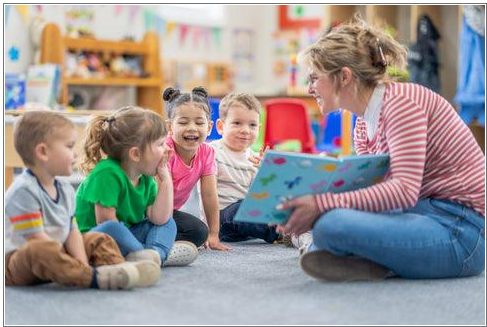
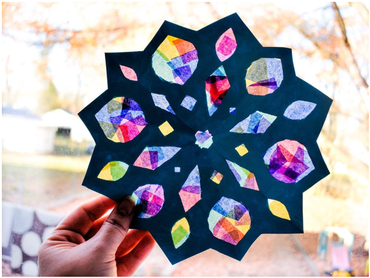

I grew up in a small town, and honestly, I was not good at English. For a long time, I believed that learning a language simply wasn’t for me.
As the oldest of five children, I naturally developed a strong interest in working with kids—caring for others, being patient, and supporting younger siblings became part of my everyday life.
At the end of high school, with the help of a wonderful private teacher and the support of my parents, I learned English in just one year. That year completely changed my life.
Over the next 10 years, I traveled to 13 countries, made international friends, and experienced how language connects people across cultures.

In 2020, I earned my degree in English as a kindergarten teacher. My mission is to help children fall in love with English from an early age—in a natural, playful way, without fear.
“The child carries within himself the potential for development. It is up to us to give him the opportunity.” – Maria Montessori”
For me, learning through play is not just a method, but a mindset. Children move, create, explore—and learn naturally along the way.